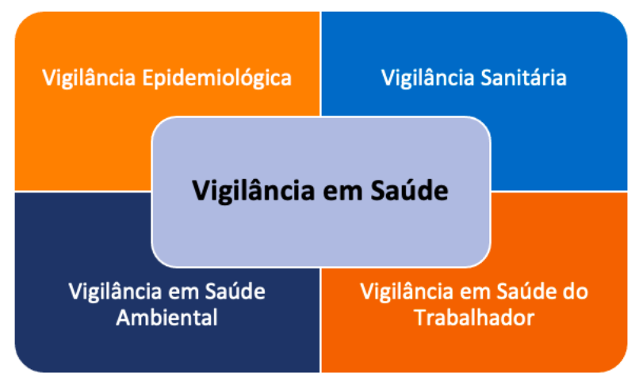

Proteção da Saúde e Vigilância Sanitária
A Vigilância em Saúde constitui uma das funções essenciais da saúde pública e como parte da mesma
deve integrar o projeto de nação inscrito na Constituição Federal de 1988, cujos objetivos
fundamentais são de uma sociedade justa e solidária, com um modelo de desenvolvimento que combina
erradicação da pobreza, redução das desigualdades sociais e promoção do bem de todos.
A Lei Orgânica do Sistema Único de Saúde (SUS) expressa este projeto ao considerar que a saúde é
tanto expressão dos determinantes e condicionantes relacionados à organização social e econômica,
como também um direito fundamental e dever do Estado. A Lei
8.080, de 19 de setembro de 1990, diz que essa garantia deve ocorrer por meio da
“…formulação e execução de políticas econômicas e sociais que visem à redução de riscos de
doenças e
de outros agravos e no estabelecimento de condições que assegurem acesso universal e igualitário
às
ações e aos serviços para a sua promoção, proteção e recuperação.”
A Política Nacional de Vigilância em Saúde (PNVS), aprovada pelo Conselho
Nacional de Saúde em julho
de 2018 reafirma o caráter de política pública de Estado e função essencial do SUS. Para a PNVS, a
Vigilância em Saúde tem como objetivo central controlar e reduzir riscos relacionados aos complexos
processos envolvendo condicionantes e determinantes da saúde, para a proteção e promoção da saúde da
população, prevenção e controle de riscos, agravos e doenças.
O documento da Organização Panamericana da Saúde As Funções Essenciais da Saúde nas Américas -
desafios para o século XXI, dentro desta mesma linha, considera que a Vigilância em Saúde se
insere
em um conjunto das funções relacionadas à avaliação. Veja o que diz o documento:
A Vigilância em Saúde como uma Função Essencial em Saúde Pública
Como expresso no documento da OPAS, As Funções Essenciais da Saúde nas Américas - desafios para o século XXI, a
Vigilância em Saúde vem sendo desafiada e atualizada para enfrentar desafios complexos - tanto
controlar e reduzir riscos relacionados aos interdependentes processos econômicos, ambientais,
sociais e biológicos, sendo exemplos bem atuais os riscos globais que envolvem as mudanças
climáticas e a pandemia pelo vírus SARS-CoV-2, como proteger e promover a saúde para melhoria das
condições de vida e qualidade da saúde da população.
Em sua trajetória ao longo dos séculos, autores como Teixeira e Waldman identificam as origens da
Vigilância em Saúde nas primeiras e principais medidas para enfrentar as pestes e epidemias entre os
séculos XIV e meados do século XIX, como o isolamento, a quarentena e o cordão sanitário. Essas
medidas retornaram atualizadas durante a pandemia por SARS-CoV-2 / Covid-19.
No documento Public health surveillance: historical origins, methods and evaluation - em tradução
livre Vigilância em saúde pública: origens históricas, métodos e avaliação, Declich e Carter
descrevem de modo breve a história do desenvolvimento da Vigilância em Saúde em diferentes momentos.
Séculos XIV e XV
Em Veneza, guardas foram nomeados para a detectar e excluir de navios com pessoas
infectadas. A quarentena e o isolamento eram as medidas adotadas para o controle da
disseminação de doenças infecciosas.
Séculos XVI e XVII
Ocorreram avanços na coleta e organização de dados. Primeiro, houve o armazenamento
de registros vitais, como nascimentos e, depois, a sistematização semanal de
registros de sepultamentos nas paroquias de Londres. Com esses dados, os padres
produziam os primeiros relatórios semanais.
Estes avanços contribuíram para que já no século XVIII a vigilância fosse reconhecida
como prática integral da provisão de saúde para a população.
Século XIX
Foi desenvolvida uma prática sistemática de coleta e interpretação de dados
relacionados à saúde com o objetivo de identificar medidas e ações apropriadas. Um
excelente exemplo sobre esta prática, combinando dados de registros vitais de
doentes e óbitos, e sua evolução temporal e distribuição espacial, está no livro
Sobre a Maneira de Transmissão do Cólera, de John Snow. O livro conta a história de
Snow e sua investigação sobre o surto de cólera em 1854, na cidade de Londres. Snow
constatou que o abastecimento inadequado de água era a causa principal. Este livro é
identificado por muitos como uma referência nas origens do método epidemiológico e
do uso da análise espacial nesse contexto.
Fins do Século XIX e início do
Século XX
Os avanços no paradigma microbiano na identificação de causas de doenças envolvendo
agentes patogênicos e vetores de doenças nas ciências básicas da saúde representou
grande mudança na teoria e prática no campo da saúde da saúde pública. Neste
contexto, ocorreu a expansão do conceito de vigilância e o desenvolvimento de muitos
e diferentes sistemas e diversificados métodos de coleta, análise e disseminação de
dados. Isso evoluiu para o que hoje conhecemos como Vigilância em Saúde e suas
diferentes e integradas práticas.
Public health surveillance: historical origins, methods and
evaluation - O
documento está disponível no repositório da OMS. Acesse aqui.
A Vigilância em Saúde, ao longo de sua construção e processos no campo da saúde pública,
foi se constituindo a partir de diferentes tipos de práticas, cujo eixo comum está no
processamento sistemático da informação para a ação. A depender do contexto e momento
histórico, essas práticas podem estar mais ou menos articuladas, expressando diferentes
níveis das capacidades institucionais nas formas de organização de cada uma e de sua
articulação com as outras. Para exemplificar cada uma tomamos como referência as
definições de vigilâncias contidas na PNVS.
Política Nacional de Vigilância em Saúde na página GOV.BR. Acesse aqui.
• TIPOS DE VIGILÂNCIA
A Vigilância em Saúde é composta por diferentes práticas de vigilância

Clique nos tipos de vigilância e veja a descrição:
Vigilância Epidemiológica
A Vigilância Epidemiológica tem como prática central a produção de informações e
conhecimentos que propiciem a detecção de mudanças nos fatores determinantes e
condicionantes da saúde individual e coletiva, com a finalidade de recomendar e
adotar as medidas de prevenção e controle das doenças, transmissíveis e
não-transmissíveis, e agravos à saúde.
Tem como objeto as doenças e agravos, destacando-se doenças transmissíveis (como
dengue, zika, leptospirose, malária, HIV, tuberculose, entre outras), não
transmissíveis (como diabetes, neoplasias, cardiovasculares e respiratórias, por
exemplo) e agravos diversos (como os provocados por acidentes, intoxicações por
substâncias químicas, abuso de drogas ou lesões decorrentes de violências).
Vigilância Sanitária
A Vigilância Sanitária inclui em suas práticas os riscos e problemas de saúde
decorrentes dos processos de produção e consumo de bens (por exemplo, alimentos) e a
prestação de serviços de saúde (por exemplo, medicamentos e tecnologias em saúde).
Envolve um conjunto de ações capazes de eliminar, diminuir ou prevenir riscos à
saúde e de intervir nos problemas sanitários decorrentes do ambiente, da produção e
circulação de bens de consumo e da prestação de serviços do interesse da saúde,
compreendidas todas as etapas e processos, da produção ao consumo e descarte, além
do controle sanitário em portos, aeroportos e fronteiras, envolvendo meios de
transportes, viajantes, infraestrutura, produtos importados e exportados, serviços e
bens produzidos.
Vigilância em Saúde Ambiental
A Vigilância em Saúde Ambiental, inclui em suas práticas a produção de informações e
conhecimentos que propiciem a detecção de mudanças nos determinantes e
condicionantes ambientais e seus efeitos sobre a saúde, com a finalidade de
recomendar e adotar políticas, medidas ações de prevenção de doenças e agravos, bem
como de promoção à saúde para a redução dos riscos ambientais. Suas práticas têm
como base a exposição das populações em situações envolvendo compartimentos
ambientais como solo, ar e água, sendo exemplos a vigilância de populações expostas
às substâncias químicas, aos poluentes atmosféricos e a qualidade da água para
consumo humano, além de temas globais e transversais, como os relacionados às
mudanças climáticas.
Vigilância em Saúde do Trabalhador e da Trabalhadora
A Vigilância em Saúde do Trabalhador e da Trabalhadora envolve um conjunto de ações
para a prevenção da morbimortalidade e redução de riscos e vulnerabilidades na
população trabalhadora, bem como de promoção da saúde. Combina ações que intervenham
na redução ou eliminação de doenças e agravos relacionados aos processos produtivos
e seus determinantes decorrentes dos modelos de desenvolvimento. Suas práticas
combinam ações de inspeção em ambientes de trabalho diversos (agricultura, postos de
gasolina, indústrias, serviços diversos, por exemplo) e vigilância epidemiológica
através do um conjunto de dados e indicadores envolvendo a Rede Nacional de Atenção
Integral à Saúde do Trabalhador (Renast).
A Política Nacional de Vigilância em Saúde e seus princípios
A definição de Vigilância em Saúde da Política Nacional de Vigilância em Saúde está no parágrafo
primeiro, Artigo 2:
“Entende-se por Vigilância em Saúde o processo contínuo e
sistemático de coleta, consolidação, análise de dados e disseminação de informações sobre
eventos relacionados à saúde, visando o planejamento e a implementação de medidas de saúde
pública, incluindo a regulação, intervenção e atuação em condicionantes e determinantes da
saúde, para a proteção e promoção da saúde da população, prevenção e controle de riscos, agravos
e doenças.”
Os processos fundamentais para a Vigilância em Saúde e nas suas práticas - epidemiológica, sanitária,
ambiental, saúde do trabalhador e trabalhadora - têm como premissas os princípios do SUS.
Universalidade
A Vigilância em Saúde é universal, transversal e orientadora do modelo de atenção nos
territórios. A universalidade, que garante aos cidadãos brasileiros o direito à saúde, sem
qualquer tipo de discriminação, se expressa de modo abrangente na PNVS, uma vez que considera
todos os serviços de saúde públicos e privados, bem como estabelecimentos relacionados à
produção e circulação de bens de consumo e tecnologias que, direta ou indiretamente, se
relacionem com a saúde.
As ações de Vigilância em Saúde devem buscar a integralidade do cuidado. Para isso, têm que estar
articuladas com as redes de atenção à saúde, constituídas pelos arranjos organizativos de ações
e serviços de saúde. Nesta perspectiva, a Vigilância em Saúde deve possibilitar um melhor
planejamento e organização da recuperação e assistência em saúde, a integração das ações e
políticas de prevenção de doenças, e de proteção e promoção da saúde como um conjunto articulado
de respostas sociais e práticas em saúde pública nos territórios.
Integralidade
Esse processo de integralidade demanda tanto a articulação dos saberes, processos e práticas
relacionados às vigilâncias e a construção conjunta de protocolos, linhas de cuidado,
matriciamento da saúde, definição das estratégias e dispositivos de organização e fluxos da Rede
de Atenção à Saúde, considerando os diferentes níveis de complexidade. Tudo isso tendo a Atenção
Primária em Saúde como centro ordenador.
Equidade
A Vigilância em Saúde contempla toda a população de todo território nacional e, orientada pelo
princípio da equidade na atenção, deve priorizar territórios, pessoas e grupos em situação de
maior risco e vulnerabilidade, na perspectiva de superar desigualdades sociais e de saúde,
incluindo intervenções intersetoriais. O princípio da equidade deve orientar o processo contínuo
e sistemático de coleta, consolidação, análise de dados e disseminação de informações sobre
processos, eventos e riscos para subsidiar o planejamento e a implementação de medidas de saúde
pública. Isso inclui a regulação, intervenção e atuação em condicionantes e determinantes da
saúde, desde intervenções para prevenção e controle de riscos, doenças e agravos até as ações e
políticas de proteção e promoção da saúde da população.
Descentralização e participação da comunidade
Além destes, a PNVS inclui outros princípios estratégicos do SUS, como: a descentralização
político-administrativa, com direção única em cada esfera de governo; e a inserção da Vigilância
em Saúde no processo de regionalização das ações e serviços de saúde.
Também é importante destacar o princípio de participação da comunidade. Essa é uma forma a
ampliar sua autonomia, emancipação e envolvimento na construção da consciência sanitária, na
organização e orientação dos serviços de saúde e no exercício do controle social. A participação
da comunidade se integra a outro princípio: o da garantia do direito das pessoas e da sociedade
às informações geradas pela Vigilância em Saúde. Sempre, claro, respeitando as limitações éticas
e legais.
Cooperação e articulação intra e intersetorial
Por fim, para que a Vigilância em Saúde cumpra seu objetivo principal, temos o princípio de
cooperação e articulação intra e intersetorial para ampliar a atuação sobre determinantes e
condicionantes da saúde. Esta cooperação e articulação é fundamental, uma vez que muitos dos
riscos, doenças e agravos que impactam à saúde são produzidos nos complexos processos e
fenômenos econômicos, ambientais, sociais e biológicos. Afinal, são esses processos e fenômenos
que determinam o nível e a qualidade da saúde da população. Com isso, além do setor saúde, é
necessário o envolvimento de outros setores e instituições governamentais e não governamentais,
além de ampla participação da comunidade.
Diretrizes e estratégias de organização da Vigilância em Saúde
A da Política Nacional de Vigilância em Saúde significou um
importantíssimo passo em um conjunto de aspectos que devem ser destacados e que se expressam
recorrentemente nas suas diretrizes e estratégias de organização. Procuramos sistematizar as mesmas
em cinco grandes temas que, embora interligados uns com os outros, apontam para aspectos que são
considerados de grande importância.
• Reafirmação dos princípios do SUS
O primeiro aspecto que destacamos foi o de reafirmação da importância dos princípios do SUS como
transversais, reforçando a importância da Vigilância em Saúde e de suas diferentes práticas de
vigilância estarem em sintonia com o projeto de nação inscrito na Constituição de 1988 e expressos
também na Lei 8080.
Na dimensão do Sistema Único de Saúde, em que os procedimentos técnicos de diagnósticos e registros,
protocolos e instrumentos são tão marcantes e dominantes, a reafirmação dos princípios do SUS é
fundamental para que análises, boletins, notas técnicas, normas técnicas, atos normativos e decisões
não estejam dissociadas de um projeto de nação. Tendo Jasanoff, como referência, consideramos que o
modo de perceber a realidade e de organizar os dados e fatos relacionados a essa realidade tem
implicações, embora nem sempre visíveis, nos aspectos das políticas públicas e de justiça social.
Quem se deve proteger de determinados riscos, a que custo e deixando de lado que populações e quais
alternativas.
• Integração das diferentes práticas de vigilância
O segundo aspecto que pontuamos se relaciona ao reforço da necessidade de integração das diferentes
práticas de gestão, de processos de trabalho, de saberes e de tecnologias das vigilâncias para a
construção de uma Vigilância em Saúde mais articulada e robusta.
Embora pareça obvia a necessidade de integração, cada uma das vigilâncias - sanitária,
epidemiológica, em saúde ambiental e em saúde do trabalhador - tem origens, práticas e objetivos que
são distintos, expressos nos organogramas das secretarias de saúde em setores e departamentos
diferentes, como bem observou Teixeira em seu artigo Desafios da Vigilância em Saúde no momento atual:
“O processo de institucionalização da Vigilância em Saúde, por
seu turno, deu-se sob a égide de uma
visão fragmentada, apresentando um desenvolvimento desigual nas últimas décadas, tanto no que
concerne à definição da legislação, que embasa e regulamenta as ações de vigilância, quanto no
âmbito político-institucional, em função da direcionalidade conferida à política de saúde e ao
processo de construção do SUS. Configurou-se, assim, a divisão da gestão nacional da VS entre o
Ministério da Saúde e a Agência Nacional de Vigilância Sanitária (Anvisa), ao tempo em que a
implementação das distintas “vigilâncias”, nos âmbitos estadual e municipal do SUS, tem sido
marcada
por tensões e conflitos em torno do financiamento e das formas de organização e gestão das ações
de
VS entre as Secretarias de Estado (SES) e as Municipais (SMS) de saúde.”
Na perspectiva de integração, Paim e Almeida Filho, assim como Freitas entendem que a análise da
situação de saúde e o mapeamento das atividades de produção, consumo e infraestrutura com potencial
impacto nos territórios constitui uma das importantes fontes para a identificação de prioridades
para uma atuação integrada e o planejamento conjunto entre as vigilâncias.
Para que isso ocorra e se desenvolva, a integração deve envolver pelo menos dois processos
fundamentais:
-
Produção conjunta de metodologias de investigação, ação, tecnologias de
intervenção, protocolos, instrumentos, normas técnicas, atos normativos e monitoramento
e avaliação das ações de vigilância.
-
Unificação dos instrumentos de registro e notificação de doenças, agravos e
eventos de interesse para a saúde pública, bem como harmonização de parâmetros e
produção conjunta de indicadores no desenvolvimento das ações de vigilância.
Um excelente laboratório para exercitar este processo de integração envolve a prática contínua da
investigação conjunta de surtos, epidemias e eventos inusitados ou situação de saúde decorrentes de
potenciais impactos ambientais de processos e atividades produtivas nos territórios, como desastres.
• Informação, comunicação e participação da comunidade
Embora cada um destes aspectos envolva estratégias distintas, estão interligados na perspectiva do
fortalecimento de uma Vigilância em Saúde integrada no âmbito do SUS.
Qualquer estratégia que tenha como objetivo ampliar e fortalecer a participação das comunidades,
vulneráveis ou não, expostas aos riscos, doenças e agravos, tem como pré-requisito o acesso a
informações regulares e públicas combinadas com estratégias de comunicação ativas, claras e
transparentes. Isto demanda, como passo fundamental, a estruturação de sistemas de informação
integrados e envolvendo as diferentes práticas de vigilância nos seus diferentes processos e etapas
como coleta, sistematização e análise de dados para a produção de informação para ação.
Estas informações e seus sistemas constituem a base que subsidia desde os alertas de riscos
sanitários à comunicação do risco (como processo interativo de troca de informação e opiniões entre
indivíduos, grupos e instituições, relativa a acontecimentos ou situações que ameaçam a saúde humana
ou a segurança dos indivíduos ou das comunidades), incluindo estratégias de mobilização social com o
objetivo de ampliar a participação e comprometer a população com a eliminação ou redução dos riscos
à saúde.
• Gestão de riscos, preparação e respostas às emergências em saúde
pública
A gestão de riscos e a detecção, monitoramento e respostas às emergências em saúde pública, ainda que
possam ser tratadas como diretrizes e estratégias em separado, como processos de respostas aos
problemas e necessidades de saúde cotidianos e em situações de surtos, epidemias, desastres ou
pandemias, estão altamente interconectadas. Em 2019, antes da pandemia, a Organização Mundial da
Saúde publicou o guia Estrutura de Gerenciamento de Riscos de Emergência e Desastres em Saúde, que
combinava gestão de risco e situações de desastres e emergências em saúde pública.
O documento Estrutura de Gerenciamento de Riscos de Emergência e
Desastres em Saúde está disponível no repositório da OMS. Acesse aqui.
A combinação da abordagem de gestão de riscos para a preparação e respostas às emergências em saúde
pública representa articular estratégias integradas de identificação, planejamento, intervenção,
regulação, comunicação, monitoramento de riscos, doenças e agravos nas situações de riscos
cotidianas, assim como de desastres e emergências em saúde. Demandam, também, que as análises da
situação de saúde incorporem a perspectiva de avaliação de riscos nos territórios, considere
-
os diferentes cenários de exposição da
população aos diferentes tipos de
perigos ou ameaças. Essas ameaças podem envolver desde agentes patogênicos, produtos
químicos ou materiais radioativos, até processos relacionados às mudanças climáticas,
como inundações, secas, chuvas fortes e deslizamentos de terra, ou de produção, como
indústrias químicas, usinas nucleares, mineração, entre outros;
-
as condições de vulnerabilidade, considerando
os diferentes grupos sociais e
populacionais, bem como territórios; e
-
as capacidades institucionais de redução de
riscos, o que inclui desde o
sistema de saúde no nível local, municipal, região de saúde, estadual e federal, além
das diversas outras instituições que possuem responsabilidades sobre os diferentes tipos
de riscos, bem como capacidades de participação e mobilização comunitária.
Esta perspectiva de avaliação contribui fortemente para identificar riscos e
vulnerabilidades nos
territórios na análise da situação de saúde e permite que se avance na gestão de riscos.
A gestão de riscos é composta por três conjuntos de processos fundamentais e interligados.
Prevenção de riscos futuros
Tem como objetivo eliminar, quando possível, ou reduzir ao máximo que determinados agentes,
produtos, processos, atividades possam produzir danos, doenças e agravos à saúde. Envolvem o
planejamento e a implementação de diferentes medidas de saúde pública, como a regulação de
produtos e atividades, a intervenção e atuação em condicionantes e determinantes da saúde
envolvendo diversos setores para desenvolver estratégias de proteção e promoção da saúde da
população.
Recuperação, reabilitação e reconstrução
Envolvem tanto doenças e agravos, como também danos e prejuízos que afetam a infraestrutura e as
condições de vida. A recuperação e reabilitação em saúde envolve toda a Rede de Atenção à Saúde
(Unidades Básicas de Saúde, Estratégia de Saúde da Família, Unidades de Pronto Atendimento e
Hospitais), mas não se realiza de modo integral sem considerar a atuação sobre os condicionantes
e determinantes da saúde. Os determinantes estão presentes desde a reconstrução das condições de
vida e trabalho em situações de crises, sejam individuais ou coletivas, bem como de acesso aos
serviços de saúde, como. por exemplo, recursos financeiros para acesso aos serviços e aos
medicamentos para tratamento. Também envolvem as infraestruturas que podem ser afetadas em
situações de crises ou desastres, o que inclui serviços de saúde diversos, como UBS, Hospitais e
Laboratórios. Uma vez que essas infraestruturas sejam danificadas comprometem a capacidades de
respostas do setor saúde e devem imediatamente ser reabilitados e recuperados ou mesmo
reconstruídos.
Mitigação de riscos
Envolvem processos como preparação, detecção, alertas, e respostas que são típicos no manejo de
desastres e emergências em saúde pública.
Mesmo considerando que possam ser realizados todos os investimentos necessários para a prevenção de
riscos envolvendo surtos, epidemias, desastres e pandemias, ou mesmo para evitar situações de crises
em saúde por desassistência, é preciso considerar que esses eventos podem ocorrer. Por isso, deve
ser estruturadas ações para reduzir os riscos, danos, doenças e agravos nas mesmas.
Atividades contínuas de monitoramento e planejamento para a preparação e respostas às emergências em
saúde pública e a elaboração de planos de respostas, permitem organizar tanto ações de prevenção de
riscos, como também de recuperação, reabilitação e reconstrução de danos, doenças e agravos para
situações de crise. Isso ainda contribui para a redução de riscos futuros.
O planejamento e a preparação também possibilitam uma melhor atuação coordenada entre as diversas
organizações governamentais e não governamentais envolvidas, articulando e organizando o esforço
para a minimização de seus efeitos muitas vezes em cenários de incertezas e de decisões em condições
de urgência.
Uma Vigilância em Saúde integrada à uma estrutura de gestão de riscos de desastres emergências em
saúde (GRDES) tem como objetivos fortalecer o sistema de saúde do país com forte ênfase nos
territórios e participação comunitária, envolvendo ações para construir a resiliência do sistema de
saúde e das comunidades, de modo a estabelecer as bases para a prevenção, preparação, resposta e
recuperação de todos os tipos de eventos perigosos, incluindo desastres e emergências em saúde.
Vigilância em Saúde: singular e sistêmica
Como já observamos, a Vigilância em Saúde possui um papel fundamental e estratégico no monitoramento
das condições de vida e saúde. Ela é um processo complexo, pois envolve uma diversidade de eventos,
produtos e processos que são ao mesmo tempo singulares e sistêmicos.
Eles são singulares por envolverem situações em que agentes patogênicos, produtos comercializados,
processos de trabalho ou mesmo impactos ambientais devem ser bem delimitados. A singularidade tem
como foco os processos específicos que em determinados contextos históricos e sociais tornam
determinados riscos, doenças e agravos únicos. E são sistêmicos por envolverem estruturas sociais,
políticas e econômicas expressas em condicionantes e determinantes da saúde que produzem
desigualdades e iniquidades em saúde. Esse contexto produz bairros, regiões, municípios e estados
mais ricos ou mais pobres, bem como, dentro dos mesmos, determinados grupos sociais e lugares com
maior potencial de exposição aos riscos e condições vulnerabilidades.
Tendo como referência Roux e suas reflexões sobre a pandemia, a autora destaca que muitos de seus
aspectos se relacionavam as características específicas do vírus SARS-CoV-2, tornando-a única: Como
o vírus é transmitido e infecta os indivíduos (e o vírus, como vimos, sofre mutações)? Quais são os
sinais e sintomas e em que momento aparecem? como o vírus e a doença interagem com outras doenças
pré-existentes? que tipo de respostas imunológicas ele desencadeia? E como isso afeta suas
manifestações clínicas, a presença e duração de imunidade após a infecção?
É nos níveis biomolecular e da clínica, nos laboratórios e serviços de saúde, que são produzidos os
registros a partir de indivíduos infectados e doentes, constituindo a base para a sistematização
desses dados e produção de informações epidemiológicas sobre a singularidade desta pandemia.
Porém, mesmo considerado os dados relacionados à singularidade, já encontramos várias limitações nos
registros, que se combinam com outras limitações. Essas interações são fundamentais para fornecer
uma perspectiva sistêmica para uma Vigilância em Saúde, em que implementação de medidas de saúde
pública inclui a intervenção e atuação em condicionantes e determinantes da saúde - parte de um
projeto da nação da Constituição Federal de 1988, que envolve a redução das desigualdades sociais e
promoção do bem de todos.
Nesta perspectiva, uma Vigilância em Saúde mais ágil e ativa durante a pandemia deveria também
envolver a coleta, consolidação, análise de dados de modo a fornecer informações básicas como taxas
incidência, mortalidade e letalidade sobre o impacto nas condições de vida e saúde na população e
seus diferentes resultados sobre determinados grupos populacionais (por raça/cor, etnia e classe
social) ou territórios (locais e bairros, por níveis de pobreza), por exemplo. As estruturas sociais
e econômicas que condicionam os modos e intensidades de exposição ao vírus (por exemplo, a
superlotação em ônibus, habitações e saneamento precário, densidade populacional em favelas,
trabalhos informais e precários sem proteção), além de resultarem em maiores exposições e riscos de
infecção para alguns grupos sociais, se combinam com outros que afetam a gravidade e a fatalidade da
doença entre os infectados. Outros fatores são, por exemplo o precário acesso aos serviços de saúde
para prevenção e cuidados, bem como maior incidência e óbitos mais precoces por doenças crônicas não
transmissíveis (como hipertensão arterial, diabetes, cardiovasculares, metabólicas e respiratórias
crônicas) para as populações com piores condições de vida, vivendo em áreas como favelas.
Considerar as características simultaneamente singulares e sistêmicas que se relacionam aos temas,
problemas e necessidades de saúde da Vigilância em Saúde, em torno dos riscos, doenças e agravos e
as respostas sociais aos mesmos é uma mudança necessária e importante para avançarmos na construção
de uma vigilância integrada em suas diferentes práticas e processos.
Desafios atuais da Vigilância em Saúde
Não queremos esgotar os muitos desafios que estão colocados para construção de uma Vigilância em
Saúde robusta, em total sintonia com os princípios do SUS em suas práticas e orientada para um
projeto de uma sociedade justa e solidária, com um modelo de desenvolvimento que combina erradicação
da pobreza, redução das desigualdades sociais e promoção do bem de todos. Mas destacamos alguns dos
desafios apontado no documento da Organização Panamericana da Saúde - As funções essenciais de saúde
pública nas Américas - uma renovação para o século 21. Marco conceitual - e descrição e pelos
autores Teixeira e Freitas e Venancio.
O documento As funções essenciais de saúde pública nas Américas -
uma renovação para o século 21. Marco conceitual está disponível no repositório da
Organização Panamericana da Saúde. Acesse o aqui.
Considerando a Vigilância em Saúde como uma Função Essencial da Saúde Pública, no documento da OPAS
aponta que:
“Diante destes desafios e tantos outros, o fortalecimento das
capacidades institucionais para a Vigilância em Saúde encontra-se por um lado, associada a
ampliação nas capacidades de produção de informações para o controle, a gestão e a resposta
adequados aos riscos à saúde, incluindo surtos de doenças transmissíveis, emergências e fatores
de risco de doenças não transmissíveis, produção e circulação de produtos com riscos à saúde,
saúde mental, diferentes tipos de agravos e lesões, por exemplo. Por outro, também produzir
informação para ação em políticas e estratégias intersetoriais para proteção e promoção da
saúde, contribuindo para a criação de ambientes e condições de vida e trabalho saudáveis e
sustentáveis.”
Se a produção de informações para o controle, a gestão e a resposta adequados aos riscos à saúde
e
para política e estratégias intersetoriais de proteção e promoção da saúde é fundamental, ela
não
pode estar dissociada de outros processos igualmente importantes. Deste modo, a integração das
ações
de Vigilância em Saúde, tendo como centro ordenador a Atenção Primária em Saúde, vai além de uma
maior articulação com a Rede de Atenção à Saúde. A Vigilância em Saúde abre possibilidades e
caminhos para priorização dos problemas de saúde da população nos seus territórios de vida e
trabalho e para maior participação das comunidades de forma a ampliar sua autonomia, emancipação
e
envolvimento na construção da consciência sanitária e proposições de enfrentamento dos
condicionantes e determinantes da saúde, bem como de gestão de riscos e danos.
Assim, é fundamental que os avanços na construção da Vigilância em Saúde possam estar em sintonia
com
uma perspectiva crítica da Saúde Coletiva e de enfrentamento das iniquidades em saúde, como
observado por Teixeira. Nesta perspectiva, Carneiro e Pessoa reforçam que políticas e ações de
Vigilância em Saúde nos territórios podem ser fortalecidas ao considerar as iniciativas de
organização comunitária e vigilância popular em saúde.

REFERÊNCIAS:
Almeida-Filho, N. 2020.Modelagem da pandemia Covid-19 como objeto complexo (notas
samajianas). Estudos Avançados. 34(99): 97-118.
Brasil. Constituição (1988). Constituição da República Federativa do Brasil. Brasília: Senado
Federal; 1988.
Brasil. Lei 8080 de 19 de setembro de 1990. Dispõe sobre as condições para a promoção,
proteção e recuperação da saúde, a organização e o funcionamento dos serviços
correspondentes e dá outras providências. Diário Oficial da União 1990; set 20
Carneiro FF; e Pessoa VM. 2020. Iniciativas de organização comunitária e Covid-19: esboços
para uma vigilância popular da saúde e do ambiente. Trabalho, Educação e Saúde v. 18, n. 3:
e00298130.
Conselho Nacional de Saúde (CNS). Resolução nº 588, de 12 de julho de 2018. Institui a
Política Nacional de Vigilância em Saúde. Brasília: Conselho Nacional de Saúde. 2018.
Declich S, Carter AO. 1994. Public health surveillance: historical origins, methods and
evaluation. Bull World Health Organ. 1994;72(2):285-304.
https://apps.who.int/iris/bitstream/handle/10665/263897/PMC2486528.pdf?sequence=1&isAllowed=y
Freitas CM, Cunha RV. 2021. A vigilância em saúde diante da Covid-19 - desafios e lições para
o enfrentamento de emergências em saúde futuras. In: Santos AO, Lopes LT, organizadoras.
Reflexões e futuro [Internet]. Brasília: CONASS. (Coleção Covid-19; vol. 6). p. 152-69.
Disponível em: https://www.conass.org.br/biblioteca/volume-6-reflexoes-e-futuro/
Freitas CM. 2016. Análise de Situação de Saúde Ambiental - Módulo 1- Aspectos Teóricos para
Análise de Situação de Saúde. Unidade 1: Aspectos iniciais e teóricos para análise de
situação de saúde - Curso de Capacitação à Distância em Análise de Situação de Saúde
Ambiental. Instituto de Estudos em Saúde Coletiva. Rio de Janeiro. UFRJ. Disponível em:
https://www.yumpu.com/pt/document/view/62901635/aspectos-teoricos-para-analise-de-situacao-de-saude
Jasanoff S. 1993. Bridging the Two Cultures of Risk Analysis. Risk Analysis, 13: 123-129.
Melo SPSC e col. 2019. Doenças crônicas não transmissíveis e fatores associados em adultos
numa área urbana de pobreza do nordeste brasileiro. Ciênc. Saúde Coletiva. 24(8): 3159-3168.
Organización Panamericana de la Salud (OPS). 2020. Las funciones esenciales de la salud
pública en las Américas. Una renovación para el siglo XXI. Marco conceptual y descripción.
Washington: OPS. 118 p.
Paim JS, Almeida Filho N. 1998. Saúde coletiva: uma “nova saúde pública” ou campo aberto a
novos paradigmas? Revista de Saúde Pública 32(4):299-316.
Paim JS, Almeida-Filho N. 2014. Análise da situação de saúde: o que são necessidades e
problemas de saúde? In: Paim JS; Almeida-Filho N (org). Saúde Coletiva: Teoria e Prática.
Rio de Janeiro: Medbook. p. 29-39.
Roux AVD. 2020. Population Health in the Time of COVID-19: Confirmations and revelations.
Milbank Quarterly, 98(3): 629-640.
Snow J. 1999. Sobre a Maneira de Transmissão do Cólera. São Paulo: Hucitec Editora. 254 p.
Teixeira CFS. 2022. Desafios da Vigilância em Saúde no momento atual. Epidemiologia e
Serviços de Saúde, v. 31, n. 2: e2022357.
Teixeira MG e col. 2020. Vigilância Universal da Covid-19 na Atenção Primária à Saúde. Rede
CoVida. Universidade Federal da Bahia. Fundação Oswaldo Cruz. Centro de Integração de Dados
e Conhecimentos para Saúde. Junho de 2020. 18 p.
Waldman, EA. 1998. Vigilância em Saúde Pública, volume 7. São Paulo: Faculdade de Saúde
Pública da Universidade de São Paulo (Série Saúde & Cidadania). 267 p.
Wilder-Smith A, Freedman DO. 2020. Isolation, quarantine, social distancing and community
containment: pivotal role for old-style public health measures in the novel coronavirus
(2019-nCoV) outbreak. J Travel Med. 2020 Mar 13;27(2):taaa020.
World Health Organization (WHO). 2019. Health Emergency and Disaster Risk Management
Framework. Geneva: WHO; 2019.

![Imagem do texto das páginas 43 e 44 do documento As Funções Essenciais da Saúde nas Américas - desafios para o século XXI. O texto diz: <br />Esta função considera o fortalecimento das capacidades institucionais e de direção das autoridades de saúde para garantir vigilância, controle, gestão e resposta adequados aos riscos à saúde, inclusive surtos de doenças transmissíveis, emergências, fatores de risco de doenças para transmissíveis, saúde mental e lesões, entre outros temas.<br />Assim, essa função é constituída por diferentes tipos de práticas, cujo eixo comum reside no processamento sistemático da informação para a ação. Essas práticas incluem a vigilância epidemiológica das doenças transmissíveis (102) e a vigilância em saúde pública para subsidiar a tomada de decisões sobre medidas de prevenção e controle de eventos relacionados à saúde (riscos e danos) ou para recomendar ações de promoção da saúde (102).<br />Essa função também abrange outras condições de saúde positivas, como nutrição, crescimento e desenvolvimento, amamentação e saúde ocupacional (103, 104). Inclui também a vigilância dos determinantes da saúde em um dado território, sob responsabilidade do poder público local, fortemente vinculada às práticas de promoção da saúde individual e coletiva com uma perspectiva intersetorial(105).<br /> A função também inclui a vigilância de riscos e problemas de saúde decorrentes dos processos de produção e consumo de bens (por exemplo, alimentos) e da prestação de serviços de saúde (por exemplo, medicamentos e tecnologias de saúde) (106, 107), que geralmente recai sobre órgãos pertencentes às autoridades de saúde, arranjo administrativo que lhes confere alguma autonomia (108).<br />Por fim, inclui também a vigilância em saúde ambiental, incumbida de detectar os fatores ambientais que interferem na saúde humana, a fim de propor medidas de prevenção e controle (109, 110). Um escopo específico desta vigilância é a vigilância e resposta a emergências (111-113).](../assets/images/modulo3/aula2/imagem2.png)